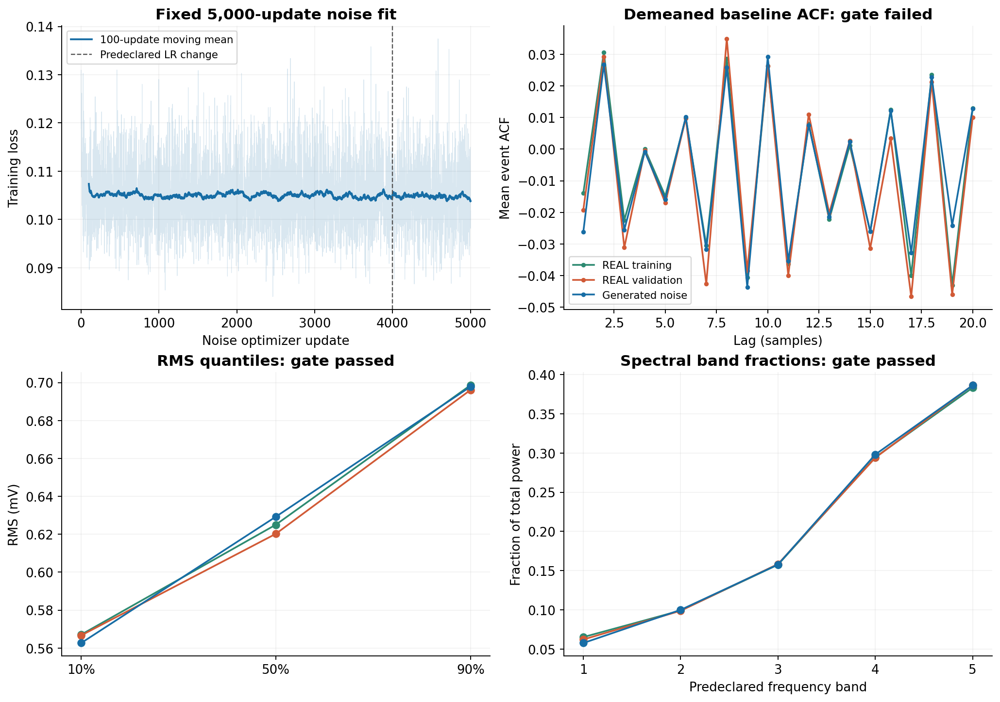
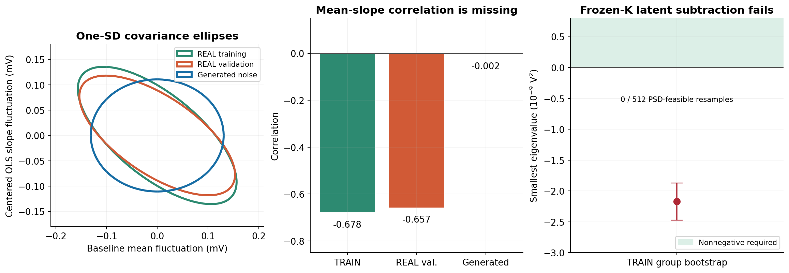
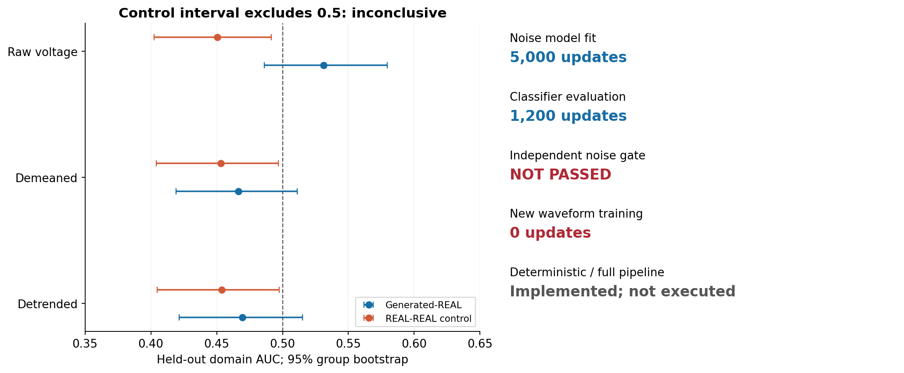

repair_002_20261012 · 固定终点 · 2026-10-12 · 保留原有 U-Net 主干
本轮改造与预注册验证已完成，噪声门未通过。新版解决了“把短窗 OLS 散布直接复制成全窗随机斜率”的实现问题，并放开 FIR、刷新训练投影；但平稳噪声＋独立事件偏置仍不能覆盖观测到的基线联合结构。按预定停止规则，没有继续脉冲长训练，也没有把部分指标通过称为模型校准成功。
噪声拟合只使用 TRAIN 前 100 点。独立评价使用已有验证集的 599 条基线、12 个原始组；分类器每类 TRAIN 2,048 条 / VAL 256 条，组隔离且阴性对照两类在组内随机分配，保留原始标签方向。
| 检查 | 实际值 | 运行前规则 | 结果 |
|---|---|---|---|
| 基线均值标准差比 | 0.85383 | 0.85–1.15 | 通过 |
| RMS 分位数比 | 0.99291 / 1.01452 / 1.00251 | 预注册分位数容差 | 通过 |
| 最大 ACF 差 | 0.021871 | ≤ 0.015 | 未通过 |
| OLS 协方差误差 | 0.57436 | ≤ 0.20 | 未通过 |
| 完整 100 点独立 SWD 比 | 0.98959 | ≤ 2.0；相同样本数 | 通过 |
| 原始基线生成–REAL AUC | 0.53114 [0.48612, 0.57958] | 点值及区间预注册范围 | 通过 |
| REAL–REAL 阴性对照 AUC | 0.45052 [0.40264, 0.49146] | 95% 区间须包含 0.5 | 未通过 |

基线均值标准差：生成 0.13102 mV，REAL 0.15345 mV，TRAIN 0.15653 mV。RMS、频谱和边缘统计接近并不能替代完整联合结构检查。
在基线中心对称坐标下，平稳标量过程的协方差具有时间反演对称性，因此基线均值与中心化 OLS 斜率的协方差为零；独立事件偏置不改变这个结论。当前生成相关系数为 −0.00223，TRAIN 为 −0.67825，REAL 为 −0.65679。该差异不等于已识别出硬件漂移；触发、选样、对齐或前脉冲结构都可能影响观测基线。

进一步按用户提出的 Cov(β̂) = Cov(β) + A K Aᵀ 复核：固定当前已拟合的平稳 K，TRAIN 协方差扣除 A K Aᵀ 后的最小特征值为 −2.1693×10⁻⁹ V²，所需相关系数为 −1.2155；残余不是合法协方差。422 个 TRAIN 原始组的 512 次重采样中，没有一次通过半正定条件。这里将量化后的 TRAIN 协方差与量化前的 K 相减，属于该分解式的近似数值检查。这个结论以当前 K 和同次采集为条件，不是所有联合噪声模型的失败证明。
因此不能直接把 OLS 相关系数补回模型，也不能把负特征值裁掉就称作校准完成。前 100 点不能唯一确定 480 点的真实漂移持续性。后续若引入联合漂移与噪声，需要同时约束 K、潜在协方差和完整 100 点分布，并明确长窗外推假设；更有判别力的新增证据是覆盖 480 点以上的纯噪声记录、触发与对齐机制以及独立采集。

生成–REAL 原始基线 AUC 为 0.5311，但阴性对照 95% 区间没有覆盖 0.5，故这项通过不足以支持等价结论。没有翻转 AUC、重抽种子或修改门槛。验证集在此前诊断中已经查看，同一采集仅 12 个验证原始组，因此本轮是开发阶段筛查，不是独立硬件校准或跨采集验收。
当前科学状态：repair_attempt_complete_stopped_at_failed_noise_gate。本轮代码改造、规定的独立噪声运行与诊断已结束；新噪声候选仍未通过，完整波形及条件峰宽仍待通过噪声门后验证。